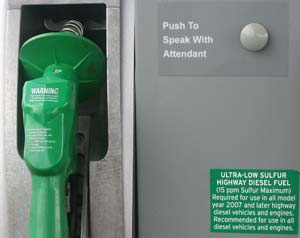

TABITHA ALTERMAN
The diesel fuel at a pump near you has changed significantly. The new, “clean” diesel will dramatically reduce pollution; according to the EPA, the switch will ultimately save $70 billion in environmental and public health costs and prevent 20,000 premature deaths.